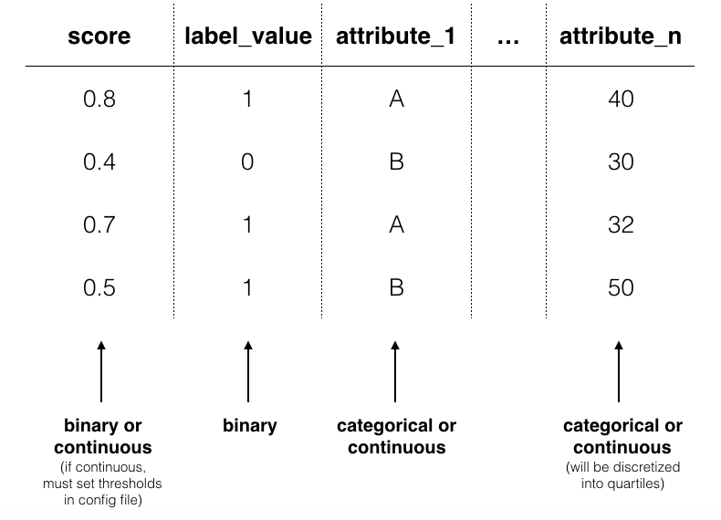
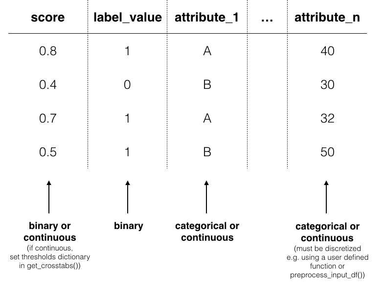

Understanding Input Data¶
Input data has slightly different requirements depending on whether you are using Aequitas via the webapp, CLI or Python package. In general, input data is a single table with the following columns:
scorelabel_valueat least one attribute. e.g.
race,sexandage. (Attribute categories are defined by users.)
score |
label_value |
race |
sex |
age |
income |
|---|---|---|---|---|---|
0 |
1 |
African-American |
Male |
25 |
180000 |
1 |
1 |
Caucasian |
Male |
37 |
34000 |
Input data for Webapp¶
The webapp requires a single CSV with columns for a binary score, a binary label_value and an arbitrary number of attribute columns. Each row is associated with a single observation.

score¶
Aequitas webapp assumes the score column is a binary decision (0 or 1).
label_value¶
This is the ground truth value of a binary decision. The data again must be binary 0 or 1.
attributes e.g. race, sex, age,income¶
Group columns can be categorical or continuous. If categorical, Aequitas will produce crosstabs with bias metrics for each group_level. If continuous, Aequitas will first bin the data into quartiles and then create crosstabs with the newly defined categories.
Input data for CLI¶
The CLI accepts csv files and also accomodates database calls defined in Configuration files.

score¶
By default, Aequitas CLI assumes the score column is a binary decision (0 or 1). Alternatively, the score column can contain the score (e.g. the output from a logistic regression applied to the data). In this case, the user sets a threshold to determine the binary decision. See configurations for more on thresholds.
label_value¶
As with the webapp, this is the ground truth value of a binary decision. The data must be binary 0 or 1.
attributes e.g. race, sex, age,income¶
Group columns can be categorical or continuous. If categorical, Aequitas will produce crosstabs with bias metrics for each group_level. If continuous, Aequitas will first bin the data into quartiles.
model_id¶
model_id is an identifier tied to the output of a specific model. With a model_id column you can test the bias of multiple models at once. This feature is available using the CLI or the Python package.
Reserved column names:¶
idmodel_identity_idrank_absrank_pct
Input data for Python package¶
Python input data can be handled identically to CLI by using preprocess_input_df(). Otherwise, you must discretize continuous attribute columns prior to passing the data to Group().get_crosstabs().
from Aequitas.preprocessing import preprocess_input_df()
# *input_data* matches CLI input data norms.
df, _ = preprocess_input_df(*input_data*)

score¶
See CLI. Threshholds are set in a dictionary passed to get_crosstabs().
label_value¶
See CLI.
attributes e.g. race, sex, age,income¶
See CLI. If you plan to bin or discritize continuous features manually, note that get_crosstabs() expects attribute columns to be type string. This excludes pandas ‘categorical’ data type, which is the default output of certain pandas discritizing functions. You can recast ‘categorical’ columns to strings as follows:
df['categorical_type'] = df['categorical_type'].astype(str)
model_id¶
See CLI.
Reserved column names:¶
idmodel_identity_idrank_absrank_pct